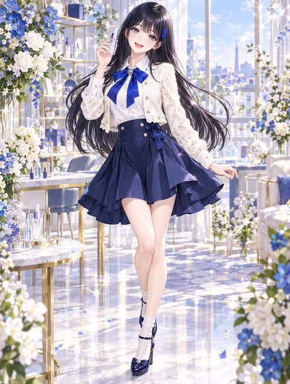

Canvas Labs · Derma Couture Simulation
STAGE:ZEROMAKER

스무 살, 작은 원룸에서 시작한 화장품 회사. 서른 살이 될 때까지 10년, 당신의 손으로 뷰티 브랜드를 키워 보세요.
BUILD 2026.10.09-B창업 신고서
어떤 대표를 키우시겠어요?
혈액형
MBTI
별자리
화면을 누르면 계속
스케줄
· · 유리 복원도
엔딩 도감
썸남 프로필